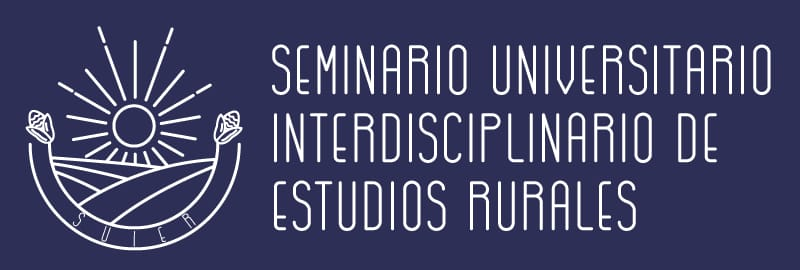
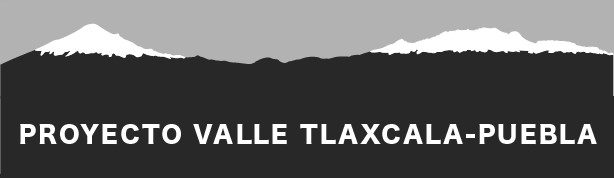
Proyecto Tlaxcala-Puebla
Investigación y reflexiones sobre los cambios socioambientales, económicos y políticos en la región
¿Quiénes somos?
El Proyecto Tlaxcala-Puebla es una iniciativa del Instituto de Investigaciones Antropológicas (IIA) de la UNAM desde el año 2009. Durante más de 15 años, este proyecto ha documentado los cambios ambientales, políticos, económicos y culturales en pueblos rurales y espacios semiurbanos del centro de México.
A través de metodologías etnográficas, trabajo de campo y análisis socioambiental, la iniciativa aborda de manera integral tres ejes fundamentales en todo el territorio de estudio:
- Transformaciones en la población, en los territorios y en la vida rural y comunitaria: Estudio de las dinámicas de adaptación, las reconfiguraciones económicas y las estrategias locales ante crisis locales y globales, como la pandemia de COVID-19.
- Hidropolítica, gestión ambiental y luchas por el agua: Análisis de los efectos de la crisis hídrica, la contaminación, la sobreexplotación y las respuestas comunitarias en defensa de los recursos naturales, los territorios y los modos de vida.
- Ecoturismo, conservación y producción social de la naturaleza: Exploración de cómo la conservación, la economía rural y las actividades de turismo transforman la organización comunitaria y la relación con el entorno.
A través de este enfoque transversal, en estos años el proyecto ha construido un panorama sobre la estructuración de las clases sociales, la identidad cultural, las transformaciones territoriales y la reconfiguración sociocultural de las comunidades rurales en esta región de Tlaxcala y Puebla. Estos objetivos se han alcanzado con la colaboración permanente entre el equipo de investigación, las poblaciones y las autoridades civiles, políticas y religiosas, con atención al género, la edad y los diversos grupos.
Nuestro Equipo
- Paola Velasco Santos
IIA-UNAM - Hernán Salas Quintanal
IIA-UNAM - Celia López Miguel
CRIM-UNAM - Alejandra González Nava
Estudiante de doctorado, IIA-UNAM - Rita Margarita Jiménez Sánchez
Labor Center-UCSB
Proyectos de Investigación
Proyectos vigentes y concluidos en la región Tlaxcala-Puebla coordinados o integrados por Hernán Salas Quintanal como investigador responsable e invitado.
Estudio de la organización colectiva del agua potable en pueblos rurales del Valle Tlaxcala-Puebla
Rol: Investigador responsable del proyecto colectivo.
Instituto de Investigaciones Antropológicas UNAM, financiamiento PAPIIT-DGAPA.
Gestión asociativa del agua potable en pueblos rurales del valle Tlaxcala-Puebla
Rol: Investigador responsable del proyecto colectivo.
Financiamiento Proyectos de Humanidades SECIHTI (Secretaría de Ciencia, Humanidades, Tecnología e Innovación).
Modo de vida en las ruralidades actuales: precariedad, fragmentación y desigualdad en Tlahuapan, Puebla
Rol: Investigador responsable del proyecto colectivo.
Instituto de Investigaciones Antropológicas UNAM, financiamiento PAPIIT-DGAPA.
Sistema Comunitario de Vigilancia y Monitoreo Ambiental en la Cuenca Atoyac-Zahuapan
Rol: Investigador invitado.
Proyecto específico IIA-UNAM: Estudio sociocultural sobre la relación entre comunidades de la cuenca y uso de compuestos químicos: percepción de toxicidad y riesgo.
PRONACE-TÓXICOS. En colaboración con IIB, IIA, FI UNAM, UATx, UACH, Centro Fray Julián Garcés y Coordinadora Atoyac con Vida.
Reapropiación socioambiental para el manejo integral y comunitario de la cuenca Atoyac-Zahuapan
Rol: Investigador invitado participante del equipo de investigación e incidencia.
Trabajo específico: Con las comunidades rurales de la cuenca del Alto Atoyac en el Valle Puebla-Tlaxcala.
PRONACE-AGUAS. Coordinado desde la UATx en alianza interinstitucional y comunitaria.
Estudio etnográfico de pueblos rurales del sur de Tlaxcala especializados en actividades productivas no agrícolas
Rol: Investigador responsable del proyecto colectivo.
Instituto de Investigaciones Antropológicas UNAM, financiamiento PAPIIT-DGAPA.
Ruralidades, sujetos sociales y respuestas comunitarias en el valle Puebla-Tlaxcala
Rol: Investigador responsable del proyecto colectivo.
Instituto de Investigaciones Antropológicas UNAM, financiamiento PAPIIT-DGAPA.
Repensar lo rural y el concepto de nueva ruralidad como propuesta para entender las transformaciones contemporáneas en el Valle Puebla Tlaxcala
Rol: Investigador responsable del proyecto colectivo.
Instituto de Investigaciones Antropológicas UNAM, financiamiento CONACYT.
Continuidades y transformaciones socioeconómicas y culturales en el municipio de Nativitas, Tlaxcala ¿hacia la conformación de una nueva ruralidad?
Rol: Investigador responsable del proyecto colectivo.
Instituto de Investigaciones Antropológicas UNAM, financiamiento PAPIIT-DGAPA.
Formación y Fortalecimiento Académico
Espacios de docencia, formación de estudiantes, seminarios permanentes y colaboración con investigadores invitados.
Docencia
Cursos de licenciatura, posgrado y capacitaciones especializadas impartidas por integrantes del proyecto (UNAM, Instituto Mora, CRIM, IIA).
Tesis Dirigidas
Investigaciones de licenciatura, maestría y doctorado desarrolladas sobre las dinámicas territoriales, hídricas y socioambientales de Tlaxcala y Puebla.
Seminarios
Espacios permanentes de discusión teórica y metodológica, como el Seminario Universitario Interdisciplinario de Estudios Rurales y "Antropología, poder y ruralidades".
Investigadores Invitados
Estancias posdoctorales, sabáticos y académicos visitantes de instituciones nacionales e internacionales que colaboran con el equipo.
Difusión y Publicaciones
Resultados de investigación, libros, capítulos, artículos científicos y eventos académicos del proyecto.
📚 Libros y Capítulos de Libro
Velasco, P. y Salas, H. (Coords.) (2025). Glosario etnográfico de las ruralidades mexicanas. Secretaría de Desarrollo Institucional UNAM, 320 pp.
ISBN: 978-607-587-807-2
Salas, Hernán y Rivermar, Ma. Leticia (2014). Nativitas, Tlaxcala. La construcción en el tiempo de un territorio rural. IIA-UNAM, 310 pp.
ISBN: 978-607-02-5543-4
Salas, Hernán, Rivermar, Ma. Leticia y Velasco, Paola (Eds.) (2011). Nuevas ruralidades. Expresiones de la transformación social en México. Ed. Juan Pablos, PAPIIT – DGAPA, IIA-UNAM, 221 pp.
ISBN: 978-607-02-2393-8
Salas, H. (2025). “Precariedades”. En Velasco, P. y Salas, H. (Coords.) Glosario etnográfico de las ruralidades mexicanas. Secretaría de Desarrollo Institucional UNAM, pp. 24-55.
ISBN: 978-607-587-807-2
Salas, H. y Velasco, P. (2025). “Historia sociolaboral de la Cuenca Atoyac-Zahuapan en el Altiplano Mexicano”. En Carton de Grammont, H. et al. (Coords.) Mercados de trabajo rurales, desigualdades y vulnerabilidad social en América Latina. CLACSO, Argentina, pp. 323-350.
ISBN: 978-987-813-957-9
Velasco, P. y Salas, H. (2025). “Historia socioambiental de la Cuenca Alta del Atoyac-Zahuapan”. En Delgado, A. et al. (Coords.) Problemas socioambientales en la Cuenca del Alto Atoyac: diálogos transdisciplinarios. CONAHCYT, Inst. MORA, pp. 109-128.
ISBN: 978-607-8273-87-4
Salas, Hernán (2023). “El modo de vida rural: vulnerabilidad y desafíos por la pandemia de COVID-19 en Tlahuapan, Puebla”. En Salas, H. y Pérez Castro, A. B. (Eds.) La década COVID en México: afectaciones a las poblaciones Rurales en México. Tomo 3, UNAM, pp. 149-191.
e-ISBN: 978-607-30-7278-6
Salas, Hernán (2021). “Reacomodos del grupo doméstico rural. Agricultura y pluriactividad en Nativitas, Tlaxcala (México)”. En Pérez Castro, A. et al. (Eds.) Ganarse la vida. La reproducción social en el mundo contemporáneo. IIA UNAM, pp. 103-132.
ISBN: 978-607-30-5237-5
Vallejo, Janett y Salas, Hernán (2018). “Trabajo y educación: ser jóvenes en Tepetitla de Lardizábal, Tlaxcala, un espacio de alta especialización textil y de confección”. En Contreras, E. y Contreras, F. (Coords.) Empleo, capacitación y jóvenes rurales de México. Ed. CEIICH UNAM, pp. 111-131.
ISBN: 978-607-30-0464-0
Salas, Hernán y Velasco, Paola (2013). “Paisaje cultural y pertenencia socioterritorial en San Miguel del Milagro, Nativitas, Tlaxcala”. En Salas, H. et al. (Eds.) Identidad y Patrimonio cultural en América Latina. La diversidad en el mundo globalizado. IIA – UNAM, pp. 301-329.
ISBN: 978-607-02-4993-8
📄 Artículos Académicos
Salas, Hernán y González-Fuente, Iñigo (2026). “The inexorable and precarious work-consumption articulation in the transition to adulthood of young people in rural Mexico”. Empiria, 67: 77-95.
ISSN: 1139-5737 | DOI: empiria.67.2026.48253
González-Fuente, Iñigo, Salas Quintanal, Hernán y López Miguel, Celia (2024). “Towards a hegemonic consumption-based model of shopping-tourist-residential territory (consumpnity): A comparative case study in China, Mexico, Spain, and the United Arab Emirates”. Anthropological Notebooks, 30(2): 1–27.
ISSN: 1408-032X
González-Fuente, Iñigo, Salas Quintanal, Hernán y López Miguel, Celia (2024). “Consumidad: una categoría para el análisis de las prácticas de explotación socio-espacial en el medio rural a nivel global”. Encrucijadas, 24(2): a2408.
ISSN-e: 2174-6753
Salas Quintanal, Hernán, González-Fuente, Iñigo y Hernández Flores, Daniel (2022). “Mobility and vulnerability in the school-to-work transition of rural youth in Mexico”. Profesorado, 26(3): 32-50.
ISSN: 1138-414X | ISSNe: 1989-6395
Salas Quintanal, Hernán (2022). “Precariedad laboral en pueblos rurales del centro de México”. Boletín del GT CLACSO Trabajo agrario, desigualdades y ruralidades, junio # 6: 28-40.
Salas Quintanal, Hernán y González-Fuente, Iñigo (2022). “Gentrificación rural en México. Fragmentar el espacio, desplazar la civitas, explotar lo cotidiano”. Revista Latinoamericana de Estudios Rurales, 7(13): 1-27.
ISSN: 2525-1635
González-Fuente, Iñigo y Salas Quintanal, Hernán (2021). “Fragmentar, descolectivizar, acumular. Surgimiento y desarrollo de la consumidad del Val’Quirico, México”. Revista Antropología Experimental, nº 21, 07: 91-106.
Salas, H., Velasco, P., González, A. y López, C. (2021). “La pandemia de COVID-19: Significados y consecuencias en los modos de vida en Tlahuapan, Puebla”. Revista Mexicana de Sociología, vol. 83, núm. especial, 159-191.
ISSN: 0188-2503 | e-ISSN: 2594-0651
Salas, Hernán (2020). “Ruralidades interrumpidas. El comportamiento de los ciclos agrícola y festivo en tiempos de pandemia”. Revista Antropología Americana, vol. 5, n° 10, pp. 193-222.
González-Fuente, Iñigo y Salas Quintanal, Hernán (2019). “Plantar la Toscana en México. Comunidad-consumo, patrimonio franquicia y gentrificación rural”. Biblio3W, vol. XXIV, nº 1.272, pp. 1-25.
González-Fuente, Iñigo y Salas Quintanal, Hernán (2019). “La consumidad: vida cotidiana, consumo y espacio rural”. Revista Euroamericana de Antropología, n° 7, pp. 13-26.
ISSN: 2387-1555
González-Fuente, Iñigo, Salas Quintanal, Hernán y Hernández Flores, Daniel (2018). “Jóvenes rurales y empleo en Tlaxcala, México: trayectorias inciertas”. Revista Mexicana de Sociología, vol. 80, n° 3, pp. 549-575.
ISSN: 0188-2503
Salas, Hernán y González de la Fuente, Iñigo (2017). “De la producción al consumo. La transformación de los sujetos rurales”. Revista San Gregorio, n° 18, pp. 6-19.
ISSN: 2528-7907
Salas, Hernán y González de la Fuente, Iñigo (2014). “La reproducción de la pluriactividad laboral entre los jóvenes rurales en Tlaxcala, México”. Papeles de población, vol. 20, núm. 79, pp. 281-307.
ISSN: 1405-7425
Salas, Hernán y Velasco, Paola (2013). “Los rostros rurales de dominación en el neoliberalismo actual”. Revista Márgenes, vol. 10, n° 13, pp. 7-14.
ISSN: 0718-4034 | eISSN: 0719-4463
Salas, Hernán y González de la Fuente, Iñigo (2013). “Nueva Ruralidad: procesos sociolaborales y desagrarización de una sociedad local en México (1980-2010)”. Gazeta de Antropología, 29 (2).
ISSN: 2340-2792 | DOI: 10.30827/Digibug.28504
González de la Fuente, Iñigo y Salas, Hernán (2012). “Community Projects in the Era of Globalization: The Case of a Local Rural Society in Mexico”. Anthropological Notebooks, 18 (1): 41–64.
ISSN: 1408-032X
🎥 Videos de Conferencias
Aquí se incrustarán los enlaces a YouTube de ponencias y conferencias grabadas.
Próximamente enlaces🗣️ Pláticas y Talleres
Lista de charlas de divulgación, talleres y eventos de comunicación social impartidos en comunidades e instituciones.
Próximamente registros🖼️ Coloquios y Eventos Académicos
10 Carteles Históricos
I Coloquio
Investigaciones Rurales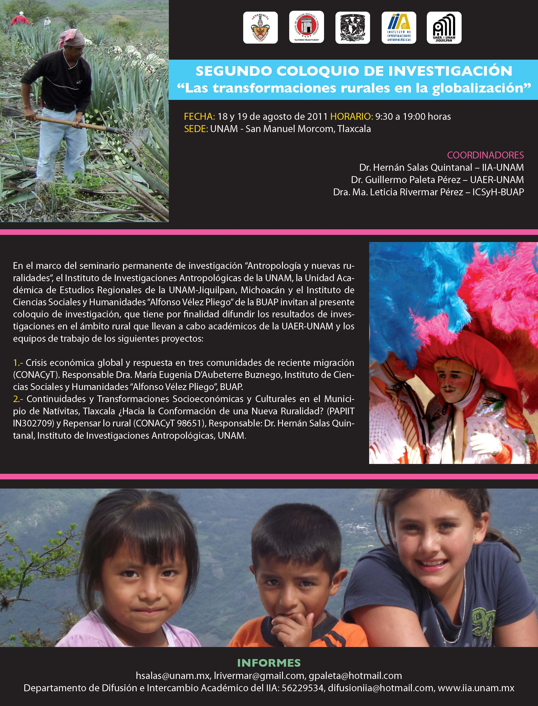
🔍 Ver Cartel CompletoII Coloquio
Investigaciones Rurales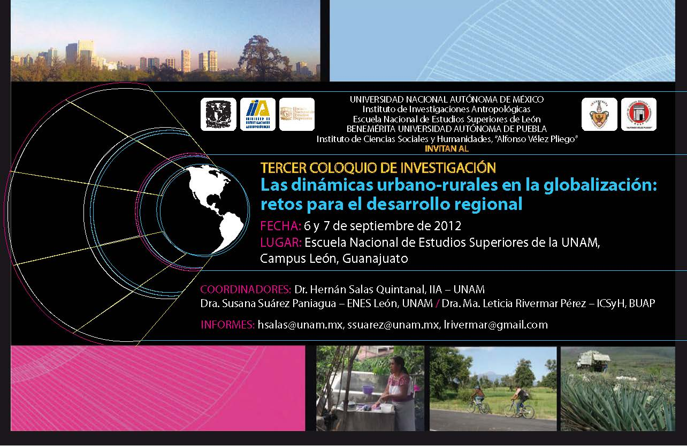
🔍 Ver Cartel CompletoIII Coloquio
Investigaciones Rurales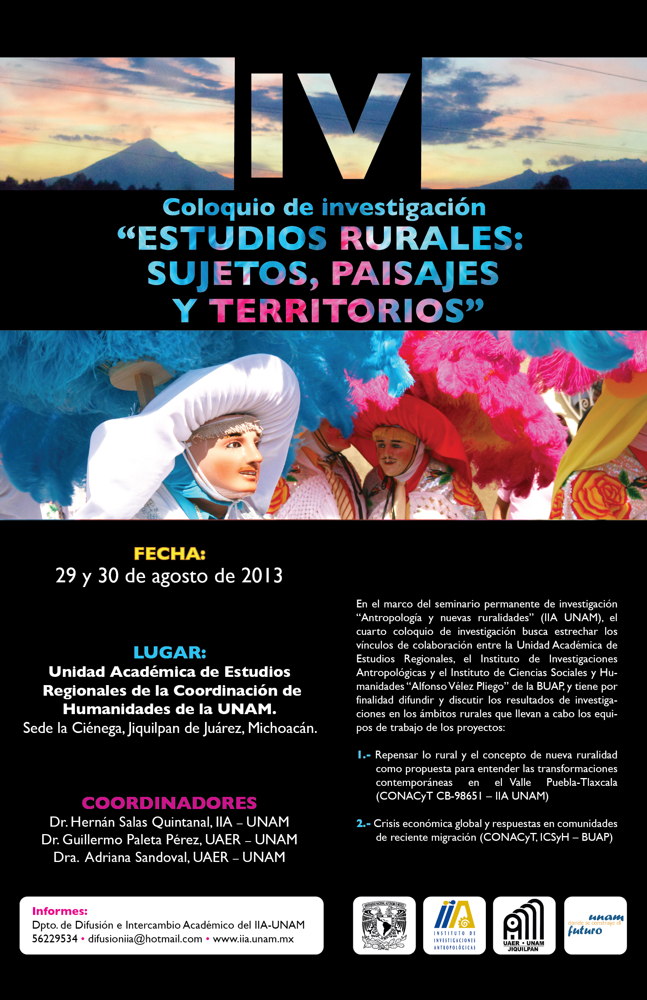
🔍 Ver Cartel CompletoIV Coloquio
Investigaciones Rurales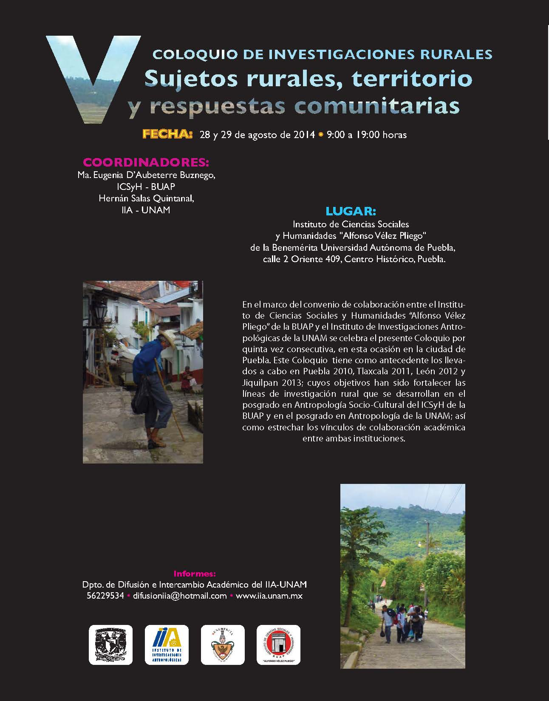
🔍 Ver Cartel CompletoV Coloquio
Investigaciones Rurales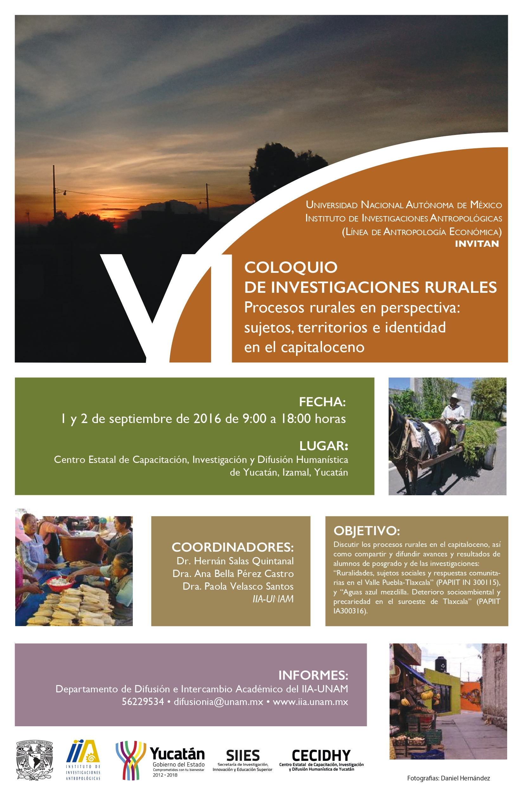
🔍 Ver Cartel CompletoVI Coloquio
Investigaciones Rurales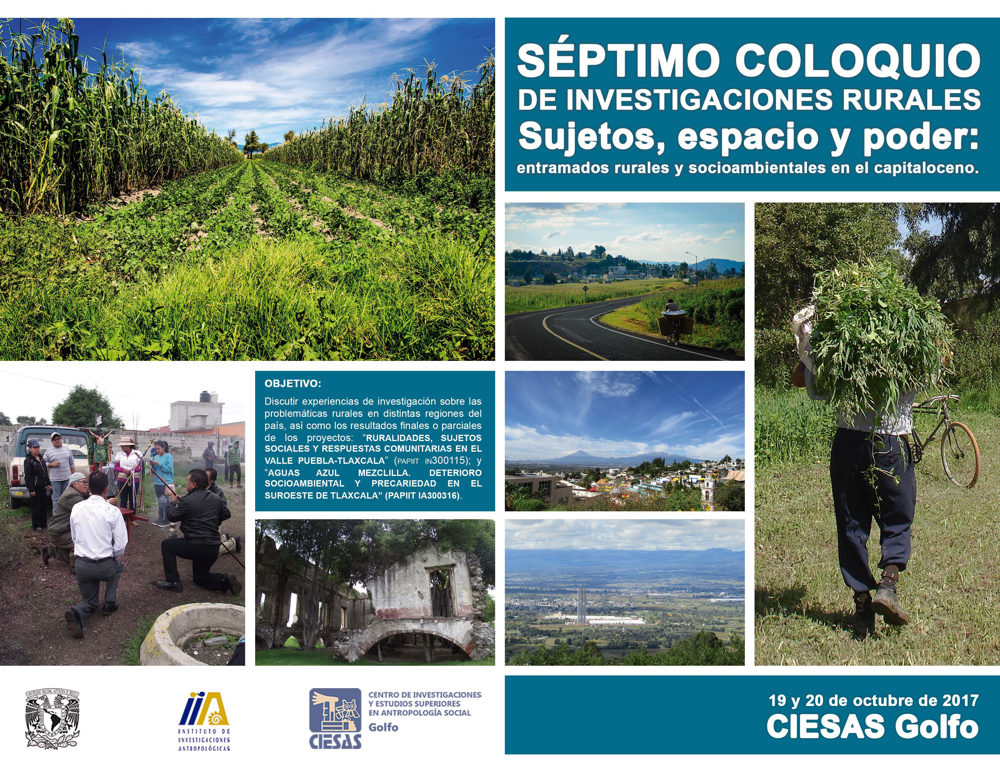
🔍 Ver Cartel CompletoVII Coloquio
Investigaciones Rurales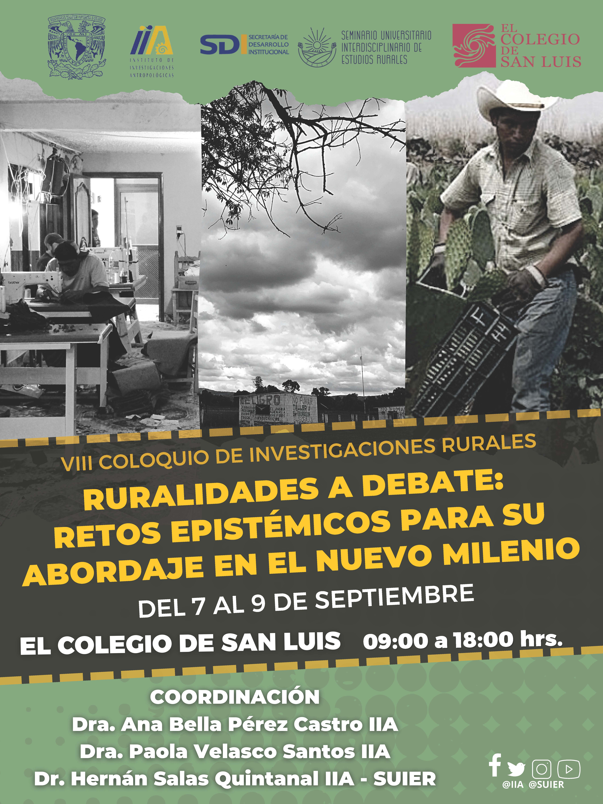
🔍 Ver Cartel CompletoVIII Coloquio
Investigaciones Rurales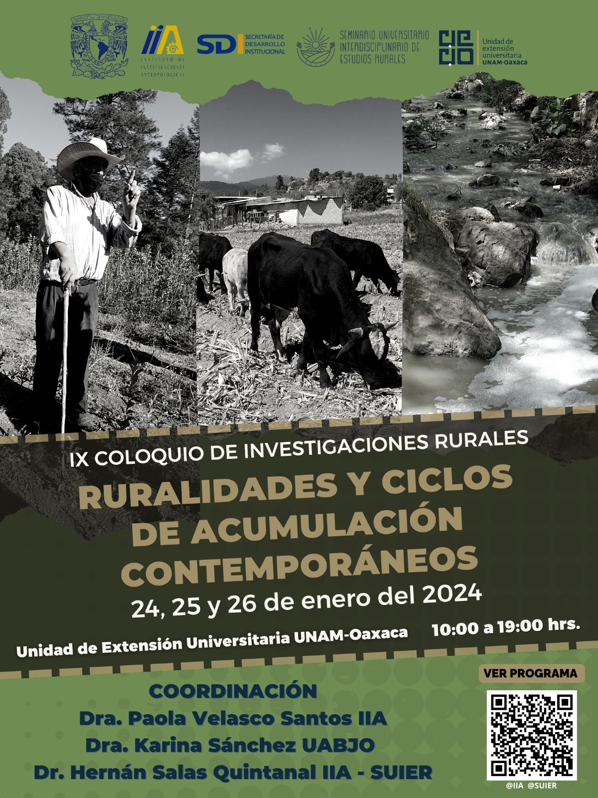
🔍 Ver Cartel CompletoIX Coloquio
Investigaciones Rurales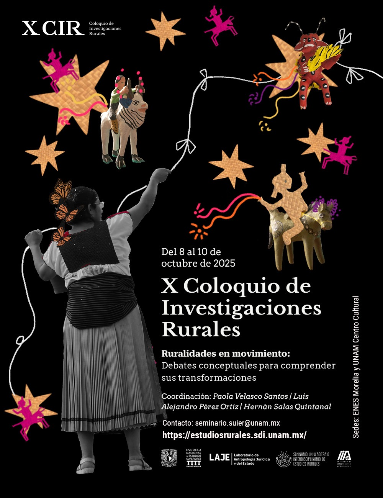
🔍 Ver Cartel CompletoX Coloquio (2025)
Investigaciones RuralesAcervo
Colección de recursos visuales, registros de campo y mapas desarrollados en la región Tlaxcala-Puebla.
Acervo Fotográfico
Galería visual y fotográfica que documenta el paisaje, las faenas comunitarias, las asambleas, los procesos productivos y el trabajo de campo etnográfico en las comunidades de la región.
Repositorio de Mapas
Mapas comunitarios, diagnósticos socioambientales espaciales, capas geográficas y modelos territoriales elaborados mediante Sistemas de Información Geográfica (SIG) y talleres colaborativos.
Vinculación Comunitaria e Institucional
Procesos de retribución social, trabajo colaborativo con actores locales e intercambio con instituciones de la región.
📖 Monografías Comunitarias
Publicación 2025San Rafael Ixtapalucan, Municipio de Tlahuapan, Estado de Puebla
Elaborado por: Paola Velasco Santos, Hernán Salas Quintanal, Celia López Miguel y Leonor Alejandra González Nava (2025).
Estudio monográfico sobre la historia socioambiental, bosques, ejidos, gestión del agua, industria del calcetín y patrimonio de la comunidad. (Proyectos CONAHCYT 318959 y 318962; PAPIIT-UNAM IN303322).
Carteles Divulgativos
Materiales gráficos e infografías diseñados para la síntesis y difusión clara de problemáticas socioambientales.
Devolución de Conocimiento
Talleres, asambleas informativas y entrega de diagnósticos participativos a los ejidos y comunidades colaboradoras.
Cartografía Colaborativa
Mapas comunitarios y talleres de mapeo participativo construidos de la mano con los habitantes de la región.
Vinculación Institucional
Convenios, mesas de trabajo y proyectos coordinados con dependencias gubernamentales, universidades y colectivos.
Mapa interactivo de los lugares en que se ha trabajado
Visualización de los municipios, comunidades y regiones de Puebla y Tlaxcala donde se desarrollan los proyectos de investigación y trabajo comunitario.
Contacto
Si deseas más información o tienes alguna duda, contáctanos a través del correo electrónico:
proyecto.tlaxcala.puebla@unam.mx